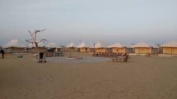

Deserts
 |
 |
From cold to hot to salt, the landscape of India has many deserts lying within its vast expanse. The Thar Desert also called the Great Indian Desert, is a region of endless sand hills and lies in the state of Rajasthan in the north-western part of the country. It is sprawled over an area of 200,000 sq km and hosts some of the most beautiful cities like Jaisalmer, which is also called the gold city owing to the golden sand dunes in it. Besides exploring havelis and temples, tourists can take a camel safari through the vast desert here or camp under the star-lit sky. Located in the midst of the desert is another splendid city, that of Bikaner. Besides its captivating palaces and forts, the city also finds appeal as a major camel-breeding centre. Known as the gateway to Thar, Jodhpur is another gem hidden in the mysterious Thar Desert.
One of the most pristine places in the country is the Rann of Kutch, which is a vast expanse of white salt desert. As far as the eye goes, one can see undulating stretches of white land. Lying in the Kutch district of Gujarat, it is one of the largest salt deserts in the world. During winters, this stark land comes to life when various camps are put up and cultural performances are organised, along with adventure-activities like hot-air ballooning.
A place where one can almost hear the scream of silence, the hauntingly beautiful dry and cold desert of Ladakh is a gem on India's tourist map. It lies in the Great Himalayas and is bordered by the majestic Karakoram Range in the north and the mighty Zanskar mountains in the south. Though the place is freezing throughout the year, the thinness of the air makes one feel the sun's heat intensely. This area is visited by tourists seeking spirituality in the various gompas here, or by adventure-enthusiasts looking to indulge in the sport of trekking. The stunning meadows and glaciers also cast a charm on the quintessential traveller.